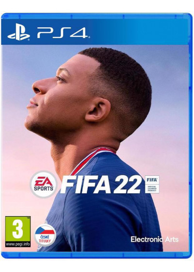
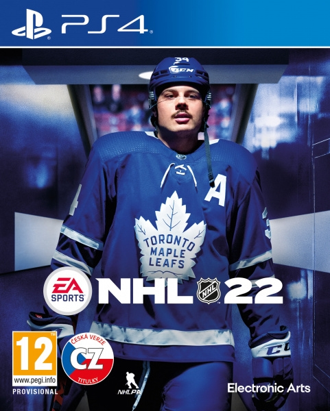
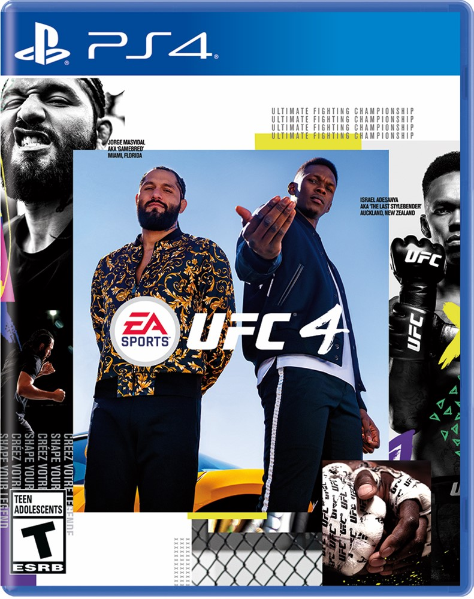
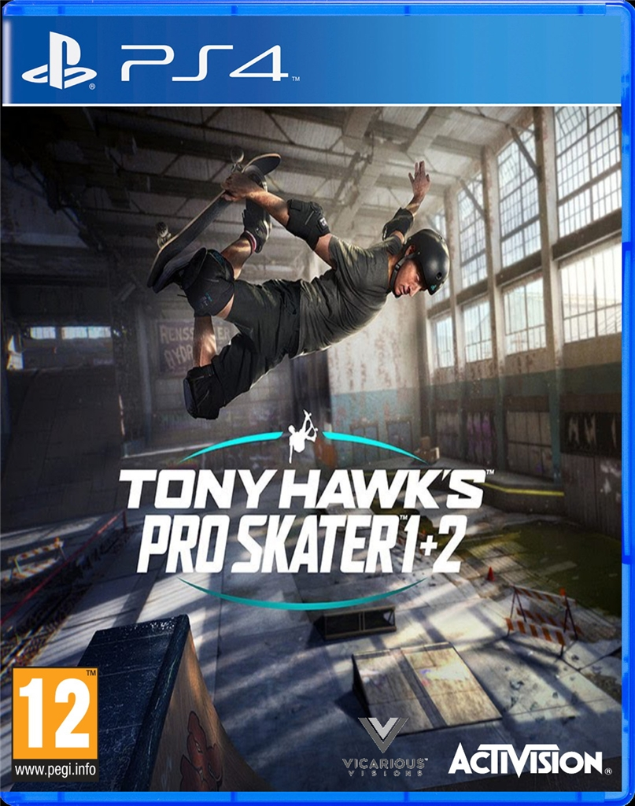
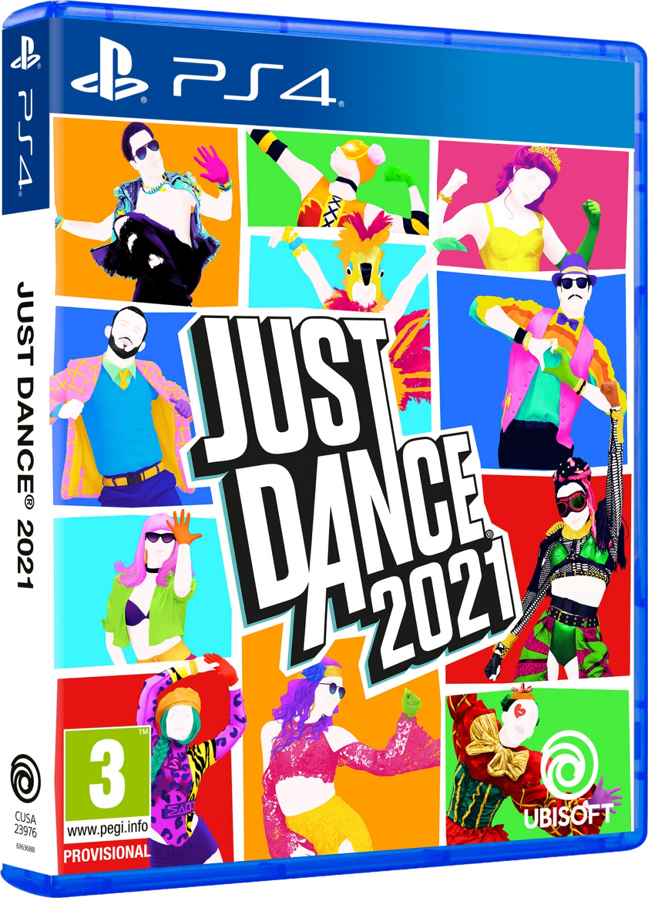
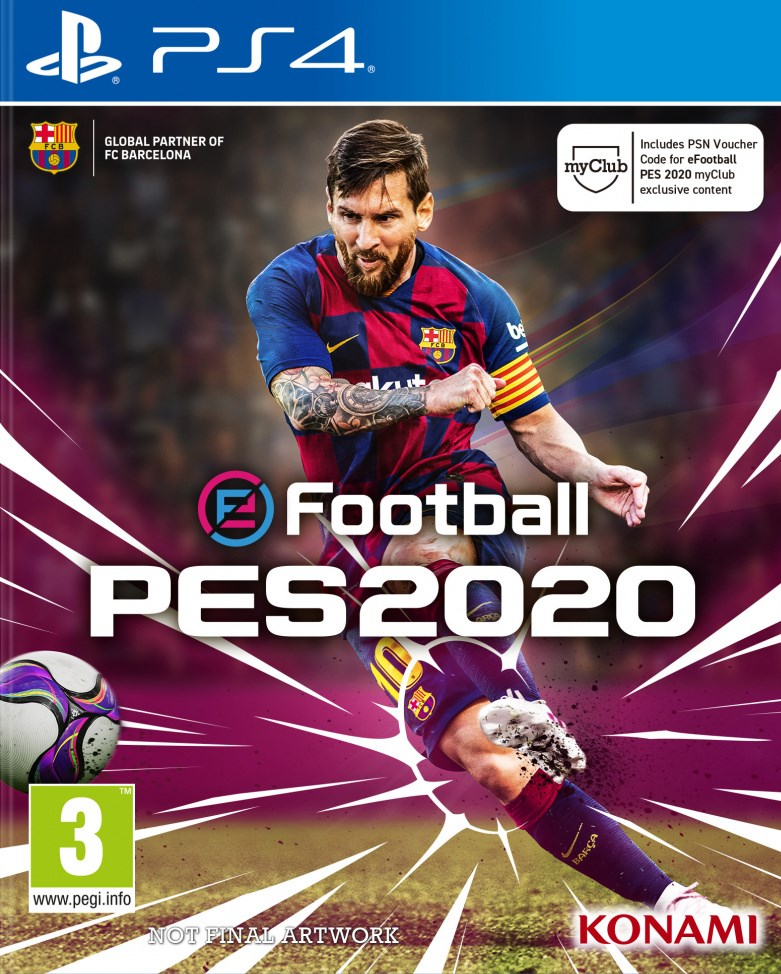
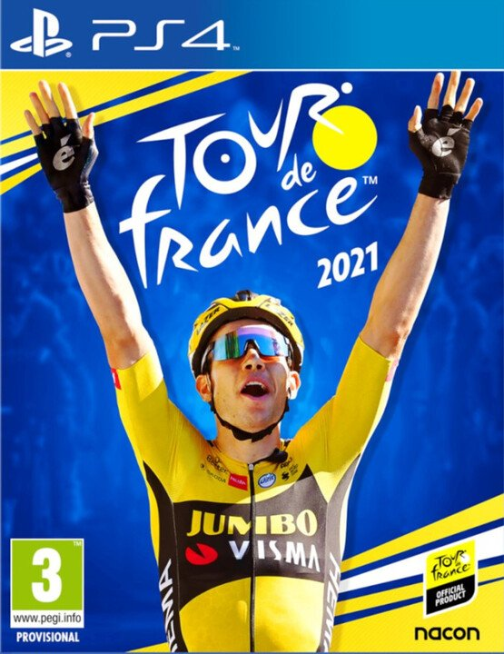
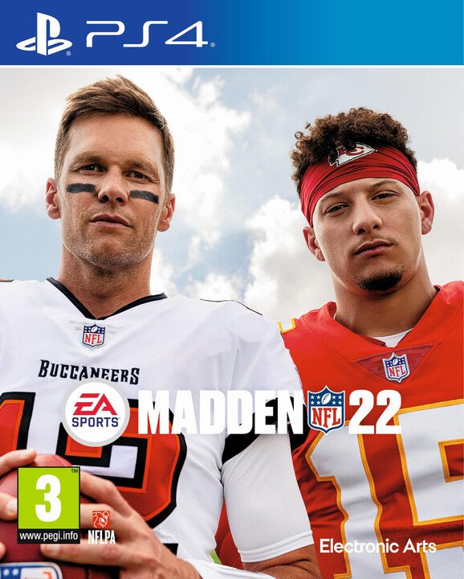
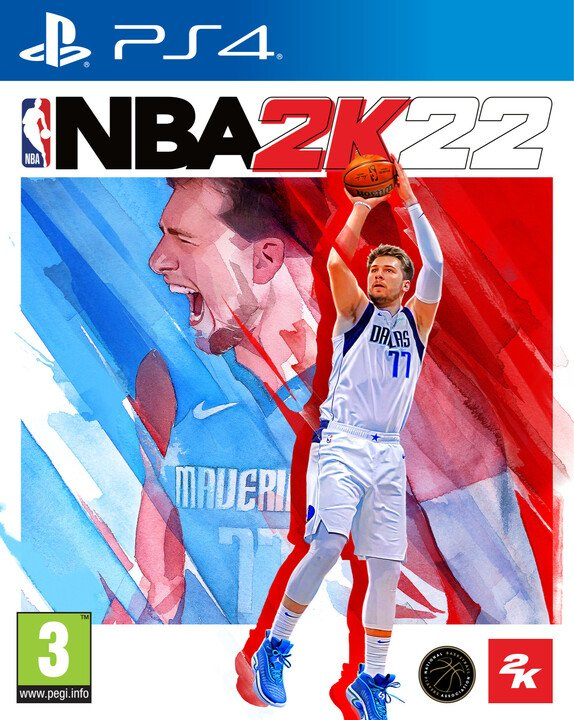

Nejlepší hry pro PlayStation 4
Sportovni videohry
Sportovní videohra je herním žánrem, jehož námětem je jakýkoliv sport. Nejčastěji se jedná o simulace. Ve většině sportovních her hrají primární roli prvky, jako jsou například rychlost, načasovanost, taktika, postřeh, pohotovost a důvtip.
FIFA 22 - PS4
Vývojář: Electronic Arts
Datum vydání: 26. září 2021
Hodnocení: 7/10
České titulky: ano
O hře: FIFA 22 je fotbalová simulační videohra vydaná společností Electronic Arts jako součást série FIFA . Je to 29. díl.
NHL 22 - PS4
Vývojář: EA Canada
Datum vydání: 15. října 2021
Hodnocení: 6/10
České titulky: ano
O hře: NHL 22 je videohra se simulací ledního hokeje vyvinutá společností EA Vancouver a publikovaná společností EA Sports . Je to 31. díl.
UFC 4 - PS4
Vývojář: Electronic Arts
Datum vydání: 14. srpna 2020
Hodnocení: 8/10
České titulky: ne
O hře: Stejně jako jeho předchůdce, UFC 4 je bojová hra založená na smíšených bojových umění propagace Ultimate Fighting Championship (UFC). Existuje 229 unikátních bojovníků s 81 alternativními verzemi. Hra obsahuje režim kariéry, který byl navržen tak, aby představoval „zážitek z nástupu“, který hráče naučí základy čtyř disciplín MMA, mezi které patří box , kickbox , wrestling a jiujitsu.
Tony Hawk's Pro Skater 1 + 2 - PS4
Vývojář: Vicarious Visions
Datum vydání: 8. června 2020
Hodnocení: 9/10
České titulky: ne
O hře: Tony Hawk's Pro Skater 1 + 2 je skateboardová videohra hraná z pohledu třetí osoby se svou hratelností orientovanou na klasické arkádové hry. Cílem většiny herních režimů je proto dosáhnout vysokého skóre nebo sbírat určité předměty.
Just Dance 2021 - PS4
Vývojář: Ubisoft
Datum vydání: 12. listopadu 2020
Hodnocení: 7/10
České titulky: ne
O hře: Just Dance 2021 je taneční rytmická hra. Stejně jako u předchozích dílů franšízy musí hráči napodobit choreografii tanečníka na obrazovce na vybranou skladbu pomocí pohybových ovladačů nebo aplikace pro chytré telefony přidružené ke hře.
eFootball Pro Evolution Soccer 2020 - PS4
Vývojář: Konami
Datum vydání: 30. července 2019
Hodnocení: 8/10
České titulky: ne
O hře: eFootball PES 2020 ( eFootball Pro Evolution Soccer 2020 ) je fotbalová simulační videohra. Hra je 19. dílem ze série eFootball Pro Evolution Soccer.
Tour de France 2021 - PS4
Vývojář: Cyanide
Datum vydání: 3. června 2021
Hodnocení: 6/10
České titulky: ne
O hře: Vyhrajte žlutý trikot díky oficiální hře z Tour de France 2021. Součástí je všech 21 etap a ty největší klasické závody. Užijte si nový systém úkolů, přepracovaný režim My Tour a další nové funkce!
Madden NFL 22 - PS4
Vývojář: Electronic Arts
Datum vydání: 17. srpna 2021
Hodnocení: 6/10
České titulky: ne
O hře: Madden NFL 22 je videohra amerického fotbalu založená na National Football League (NFL).
NBA 2K22 - PS4
Vývojář: Visual Concepts
Datum vydání: 9. září 2021
Hodnocení: 7/10
České titulky: ne
O hře: NBA 2K22 je basketbalová simulační videohra. Je to 23. díl franšízy NBA 2K.
David Švancar © 2021